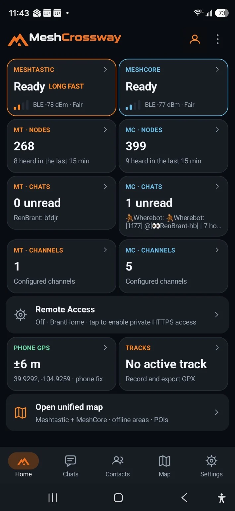
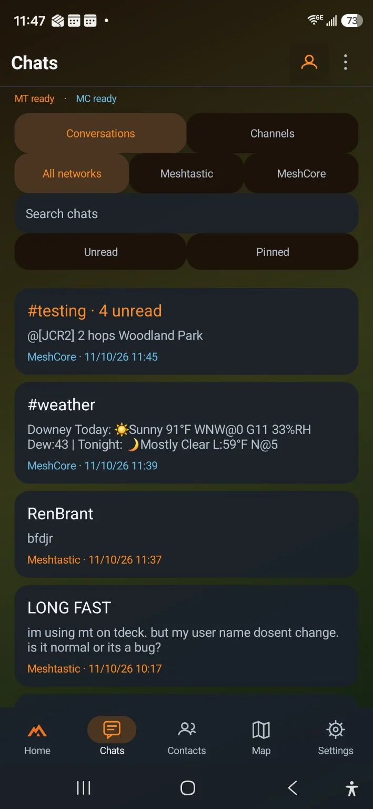
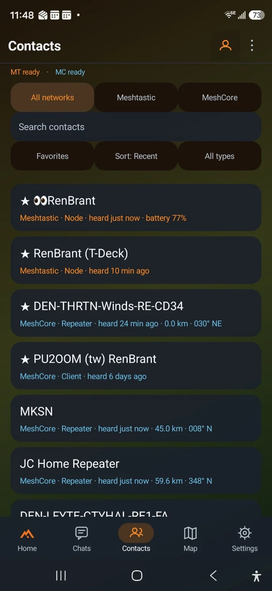
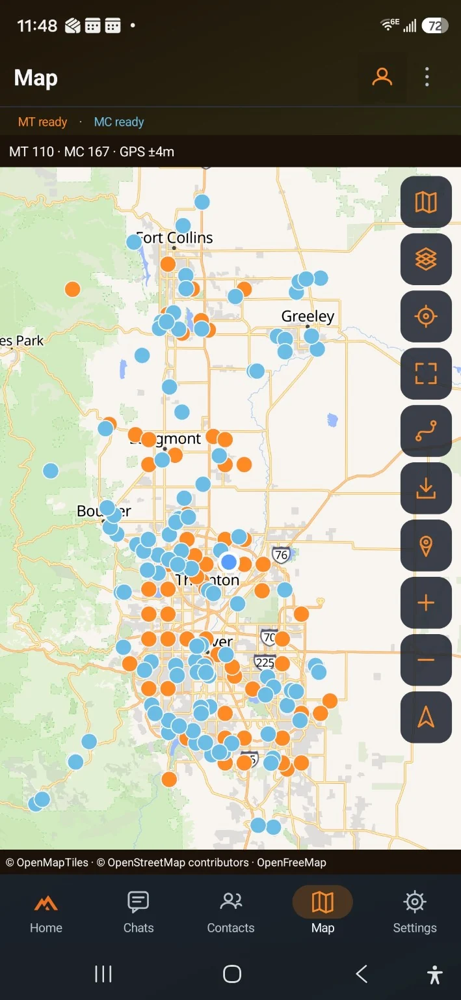
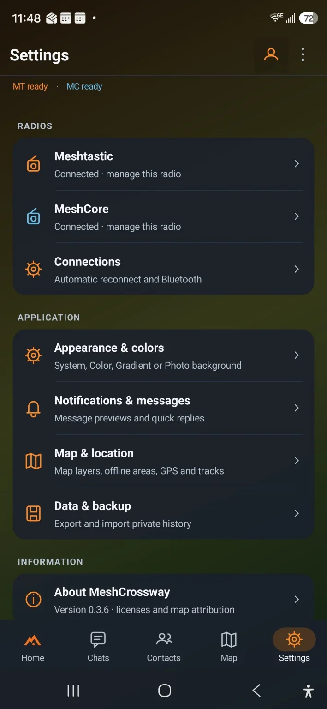
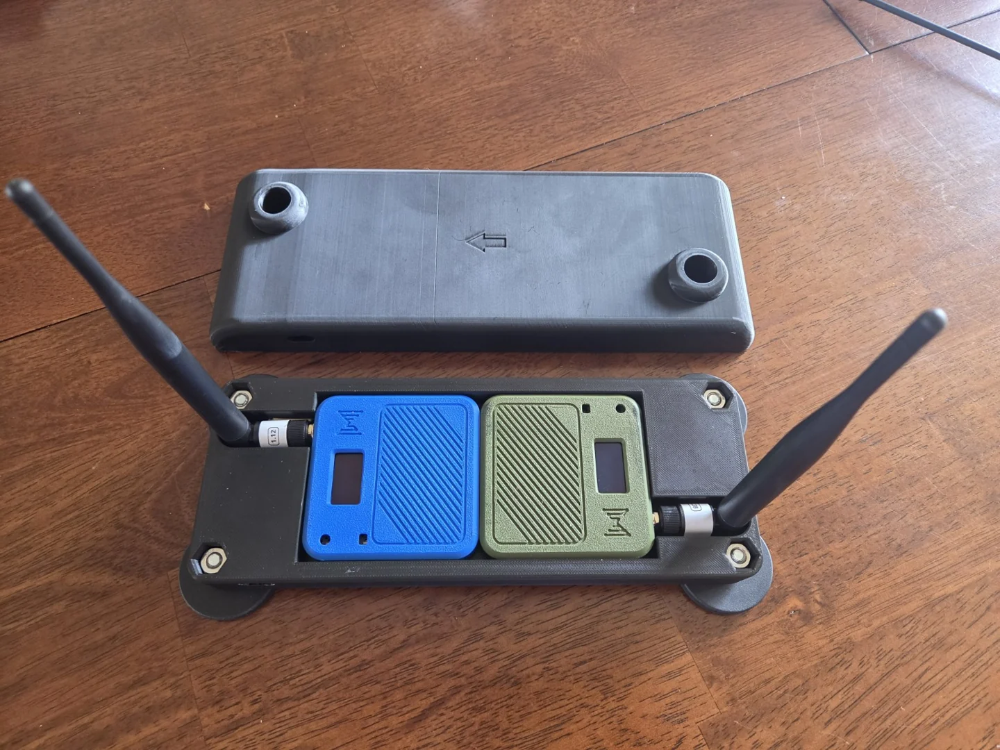
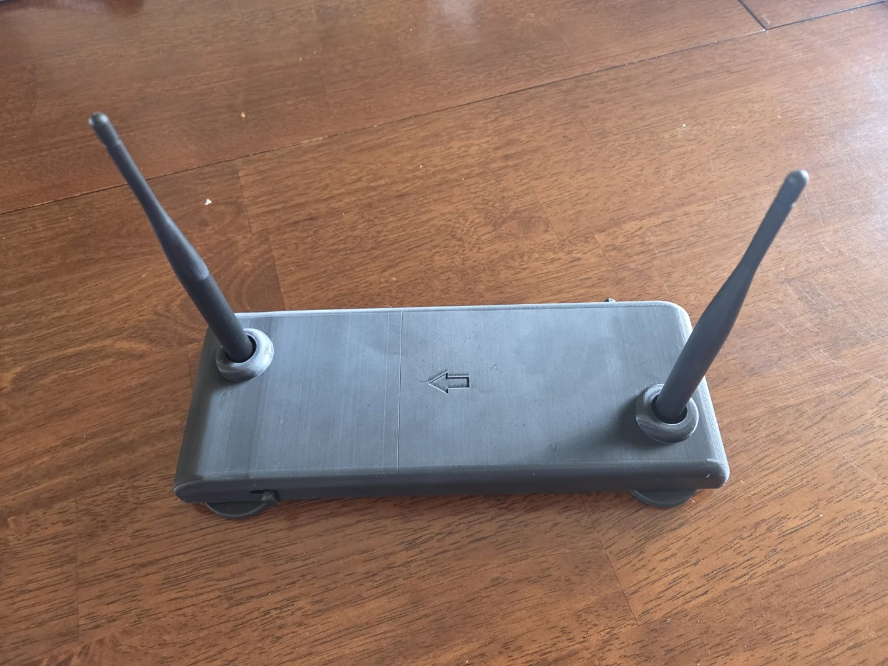

Meshtastic
One compatible radio running Meshtastic.
Bluetooth → your phoneKeep up with both mesh communities from the phone you already carry. Messages, contacts and a shared map, together in MeshCrossway.
Your phone + two independent radios. Connect one Meshtastic radio and one MeshCore radio by Bluetooth. Each radio stays on its own network.
Free, open-source Android app · Public beta for testing

The app is your control center. The radios carry your messages.
One compatible radio running Meshtastic.
Bluetooth → your phoneOne compatible radio running MeshCore Companion BLE firmware.
Bluetooth → your phoneConnect both radios in the app, then choose the conversation or map you want to explore.
You provide the phone and radios. Choose compatible models that suit your setup; a dedicated touchscreen controller is not required.
Two networks, each with its own conversations. MeshCrossway lets you use them side by side. It does not forward messages between Meshtastic and MeshCore.
Real screens from the app, with both networks connected. Select any image for a closer look.

Find your chats and channels in one place. Filter by network whenever you need to focus.

Keep favorites close and see which devices have been heard recently on each network.

Explore both networks on one map. Record your route, save places and download map areas before you head out.

Choose your colors, manage each radio and keep a backup of your data.
Screenshots from beta 0.3.6. Appearance and features may change as the app develops. Map markers show stored positions, not guaranteed live availability.
Carry your radios in a pack, use them at home or build a setup for your vehicle. Bluetooth gives you flexibility in where you place them, within connection range.


This custom 3D-printed mount was made by MeshCrossway’s creator to hold both radios on a car roof while using the app from the phone. It is an example of a personal setup, not a required accessory or a product included with the app.
Try MeshCrossway with an Android phone and two compatible Bluetooth radios: one for Meshtastic, one for MeshCore.
Download Android beta · 0.3.10Android 8.0 or newer · ARM64 phone · Free APK download
A working beta, still evolving. Version 1.0 has not been released. Compatibility with more phones and radios is still being tested.
Download the APK on your phone, open it and allow installation when Android asks.
Open Settings in MeshCrossway. Connect your Meshtastic radio and your MeshCore radio over Bluetooth.
Open your chats, browse contacts or bring both networks into view on the map.
You need external radios to communicate with the mesh networks. To use Meshtastic and MeshCore together, connect two independent compatible Bluetooth radios — one for each network. The phone runs the app; each radio handles its network.
Radio messages do not need cellular service or internet. You do need internet to download the app and map areas. Download maps before going offline. Message delivery depends on your radio setup, terrain and available mesh coverage.
No specific brand or car mount is required. Each radio must support its network’s compatible Bluetooth connection. Heltec V3 radios are used in development; other models and firmware combinations need testing. See the compatibility and setup guide on GitHub →
Messages stay on the network you send them through. MeshCrossway brings both networks into one app, but does not bridge or relay messages between them.
Source code, radio requirements, development notes and the separate ESP32 controller project are documented on GitHub. You can also report a problem or suggest an improvement.